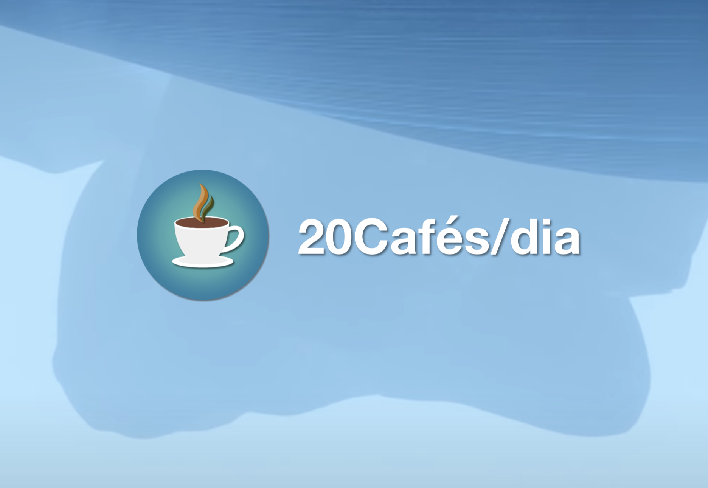
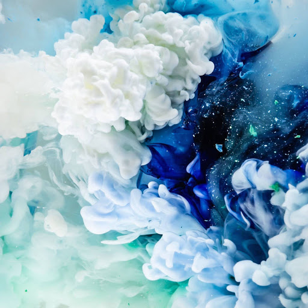

<div class="homepage-div">
    <div class="main-div">
        <div class="top-title-div">
            <div class="main-title-div">
                <p class="main-title">Eduardo Correia</p>
                <div class="secondary-title-div">
                    <p class="secondary-title">Fullstack Web Developer - Personal Page</p>
                </div>
            </div>
            <div class="side-title-div">
                <h2>Hey there!</h2>
                Welcome to my personal website. I hope you enjoy your stay.<br>
                I'm a certified Full-Stack Web Developer and I'm addicted to good UX and beautifully designed websites.<br>
                <div class="contact-buttons">
                    <a href="mailto:eduardoxcorreia@outlook.com" class="contactme-button-email" matRipple>
                        
                        Email
                    </a>
                    <a href="https://www.linkedin.com/in/eduardoxcorreia/" target="_blank()" class="contactme-button-linkedin" matRipple>
                        
                        LinkedIn
                    </a>
                </div>
            </div>
        </div>
        <div class="main-content-div">
            <div class="main-content-1">
                <div class="content-1-column-1">
                    <h1>Welcome!</h1>
                    <p class="content-1-column-1-p">
                        
                            This website is UNDER HEAVY CONSTRUCTION. Everything can change
                            without previous notice.<br />
                            Use the Portfolio button on the navigation bar to navigate through
                            my projects. Use the Contact button to view all the ways you can use to contact me!
                            <br><br>
                            This will be constantly improving, when I have time to work on
                            it.<br />
                            This website is being made using a completely new design philosophy
                            called "Neumorphism".<br />
                            It is also made using Angular 10, and should be already fully Responsive.<br />
                            Everything you see was made by me, from scratch. ZERO copy-paste. <br>
                            I hope you enjoy.<br />
                    </p>
                </div>
                <div class="content-1-column-2">
                    
                </div>
            </div>

            <div class="main-content-2">
                    <div class="content-2-column-1">
                        
                    </div>
                    <div class="content-2-column-2">
                        <h1>Neumorphism - A new UI Design</h1>
                        <p class="content-2-column-2-p">
                            <br>
                            What is a Neumorphic UI (or Neumorphism) ?
                            <br><br>
                            Neumorphism is the next evolution in UI Design, right after Flat Design. It was born from the old Skeuomorphism (the "old" way of creating UI elements that try to immitate real-world objects), and went on to create an entirely new UI and User Experience. <br>
                            It is designed in a way that gives a feeling of depth and realism to the User Interface, while
                            keeping everything feeling modern and clean. Designers and Web Developers from all over the world have seen catchy neumorphic designs on Dribbble and Behance – and now, it’s a trend in its own right.
                            <br><br>But do you know how much of them actually use it? Nowadays, sadly, still not a lot. But we still have a lot of examples: did you know iOS (after version 13) is starting to incorporate more and more Neumorphic UI components?
                            <br>I've been researching and learning how to develop and design these new futuristic interfaces, and I gotta say: I love it.
                            <br><br>Do you want me to make you a website or webpage using Neumorphism? Contact me!
                            <br><br>Do you think Neumorphism is the future? I sure do.
                        </p>
                    </div>
            </div>

            <div class="divider"></div>

            <h1>My Other Projects</h1>

            <div class="smallcards-outer-div">
                <div class="card-div" matRipple>
                    <div class="card-img">
                        <a href="https://20cafes.com">
                            
                        </a>
                    </div>
                    <div class="card-title">
                        20Cafés/dia Página Oficial
                    </div>
                    <div class="card-text">
                        This is a huge project that I am working on. It's supposed to become a full community and it has been my main hobby lately. <br>
                        It has a YouTube and Twitch pages, Discord servers and social networks.
                    </div>
                </div>
    
                <div class="card-div" matRipple>
                    <div class="card-img">
                        
                    </div>
                    <div class="card-title">
                        Placeholder
                    </div>
                    <div class="card-text">
                        This is a temporary placeholder.
                    </div>
                </div>
    
                <div class="card-div" matRipple>
                    <div class="card-img">
                        
                    </div>
                    <div class="card-title">
                        Placeholder
                    </div>
                    <div class="card-text">
                        This is a temporary placeholder.
                    </div>
                </div>
    
            </div>
        </div>


    </div>
</div>
